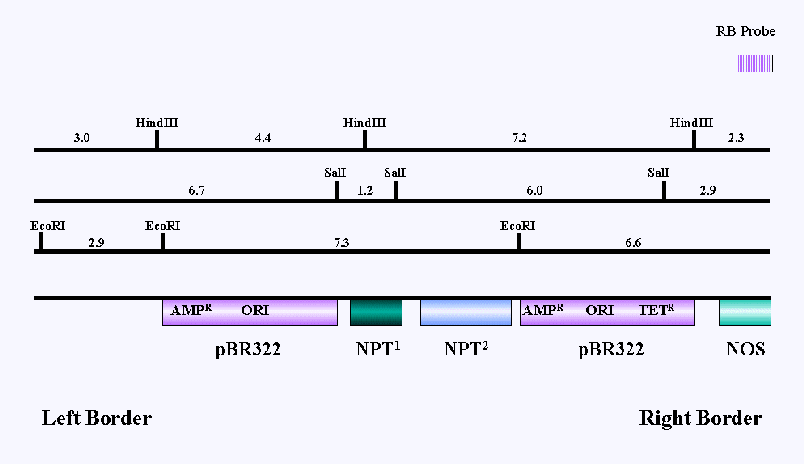

Figure 1:Structure of T-DNA in Ti plasmid 3850:1003
Diagram of the T-DNA region. AmpR, E. coli beta-lactamase gene; ORI, E. coli
origin of replication; NPT1, kanamycin resistance gene with a bacterial
promoter; NPT2, kanamycin gene with a dual plant promoter. Size of EcoRI
restriction fragments are shown in kilobases. Region of homology to probe
used to hybridise to filters in Figures 2,3 &4 is shown.